Презентация
Глушенок А. А.
Российский университет дружбы народов, Москва, Россия
2 октября 2026
Приобретение практических навыков по конфигурированию SMTP-сервера в части настройки аутентификации.
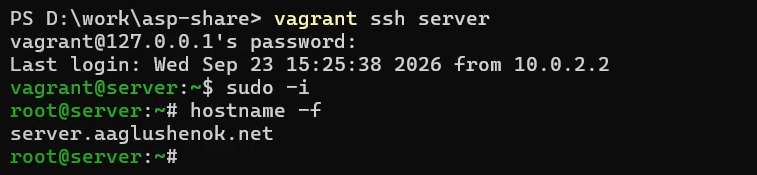
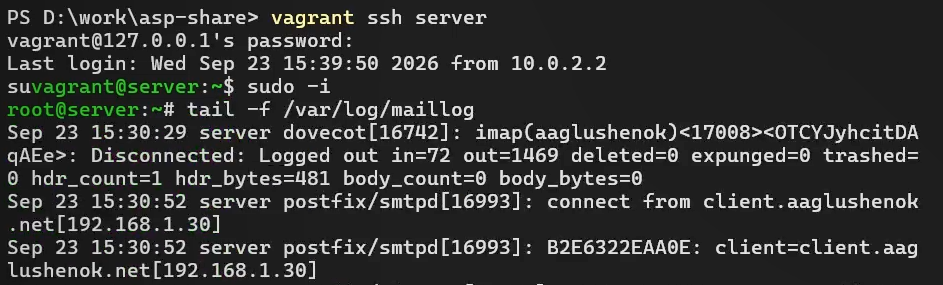
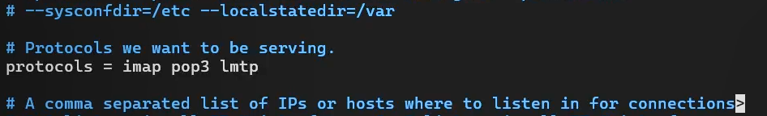
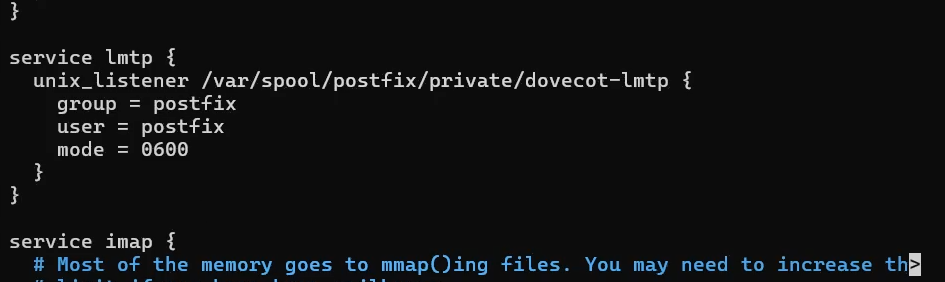
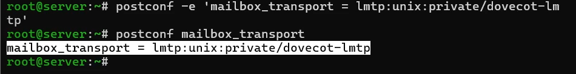
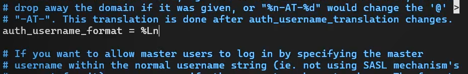
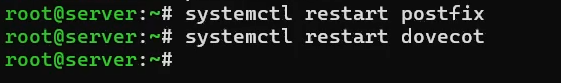
Далее проверяем, что работа сервера Postfix запущена.
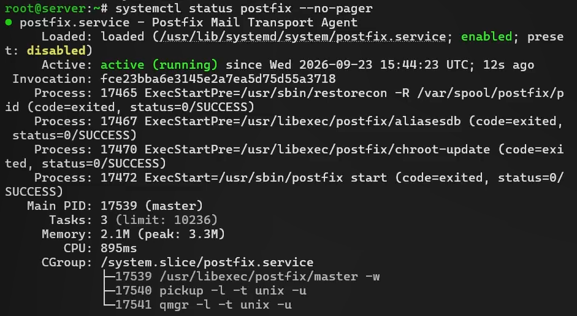
Затем проверяем, что работа сервера Dovecot запущена.
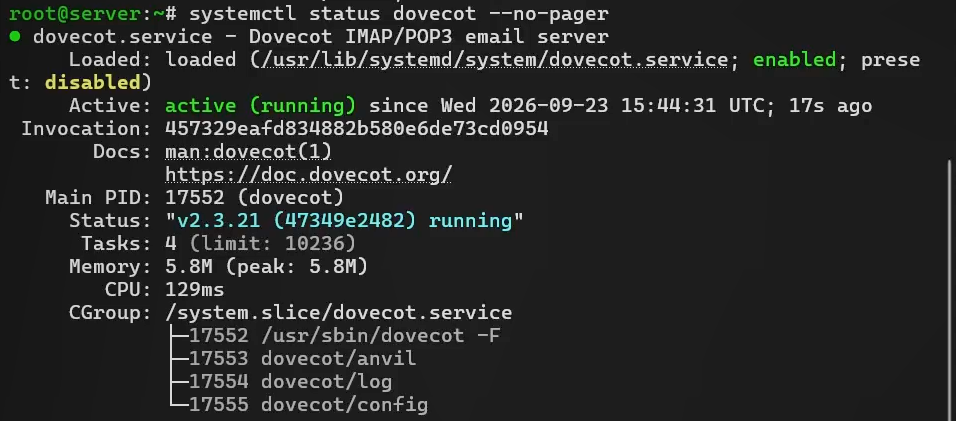
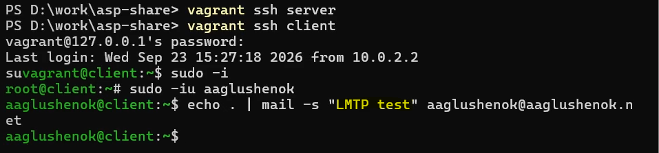
Затем просматриваем содержание логов мониторинга почтовой службы (подключение почтового клиента > присвоение письму идентификатора > создан Message-ID письма > письмо от пользователя aaglushenok, поставлено в очередь > сессия отправки завершена > письмо передано на доставку через LMTP > Dovecot LMTP подключился > письмо сохранено в ящик INBOX > подтверждение успешной доставки (status=sent) > отключение LMTP > письмо удалено из очереди Postfix).
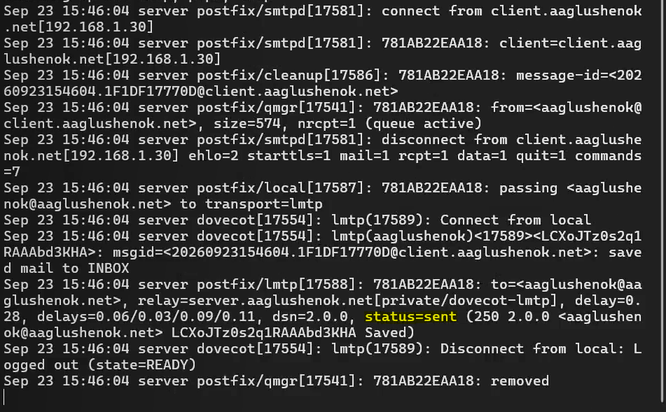
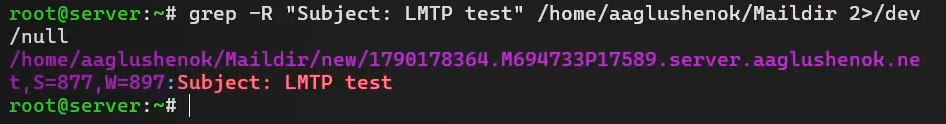
Затем дополнительно проверяем доставку письма через doveadm: отправленное с client письмо доставлено и отображается с номером 5.
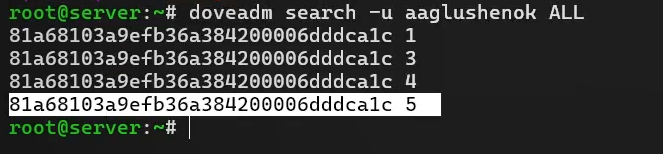
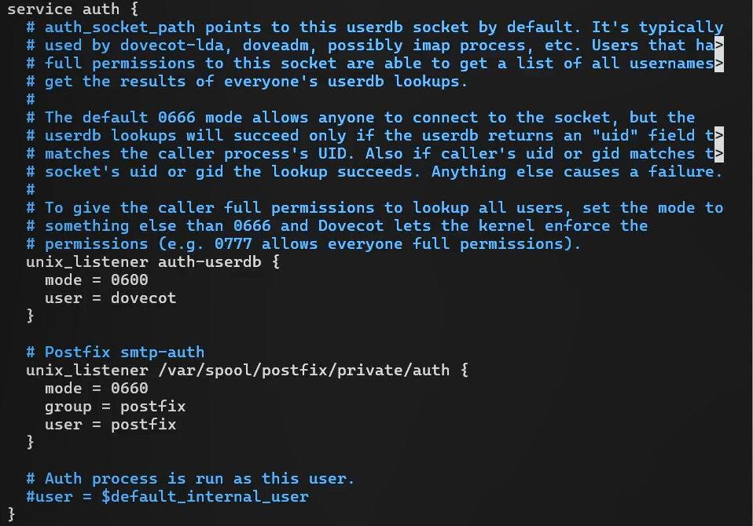
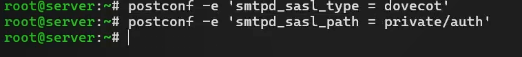
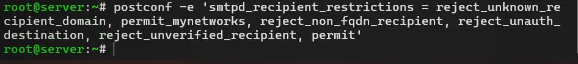
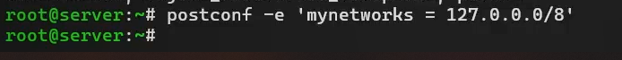
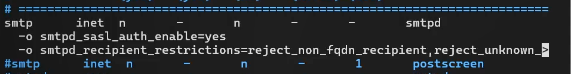
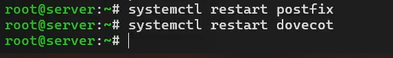
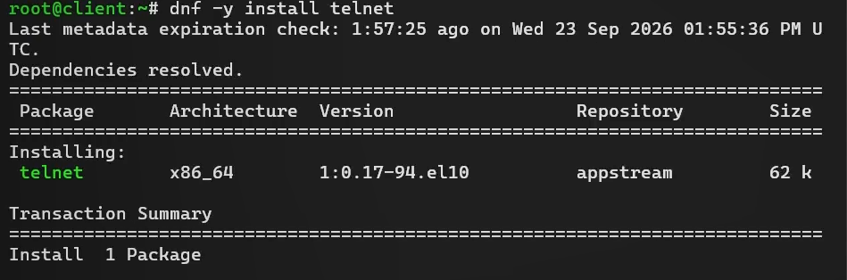
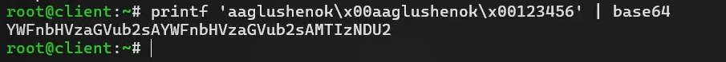
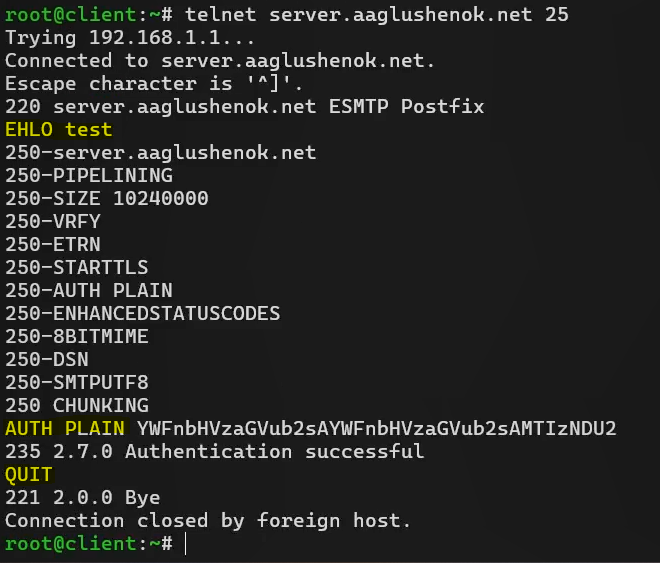
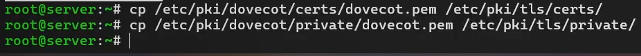
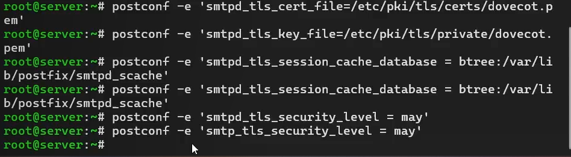
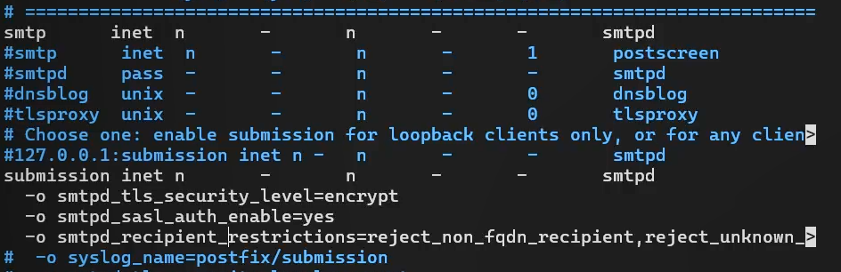
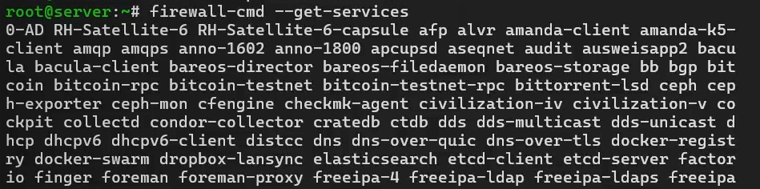
Затем добавляем службу smtp-submission в список доступных служб.
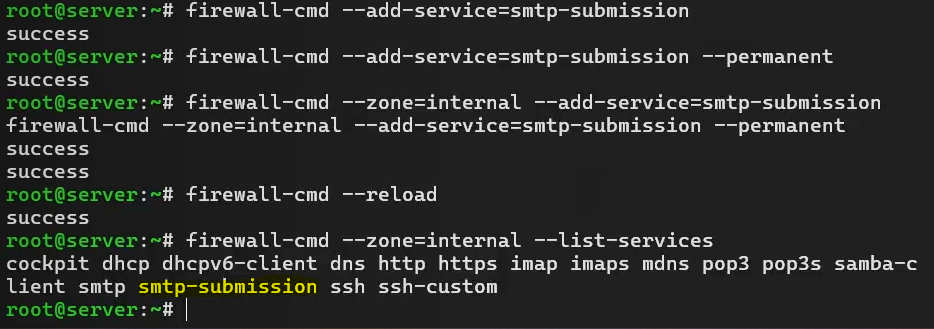
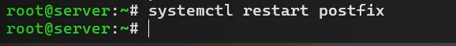
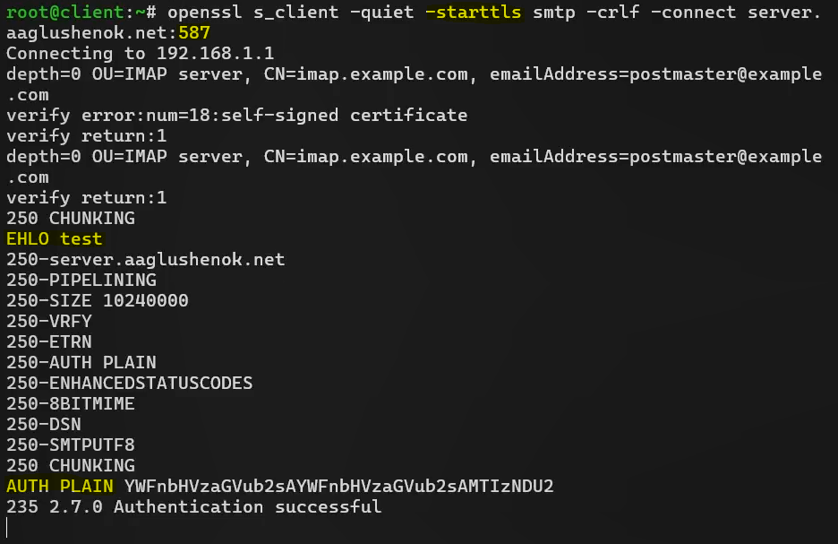
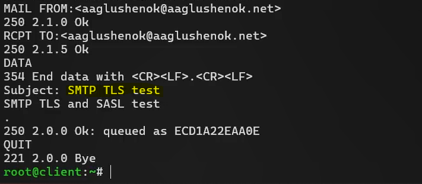
Затем по логу мониторинга почты видим, что сообщение успешно отправлено и доставлено.
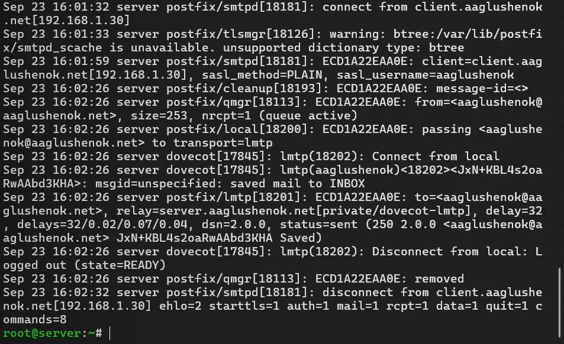
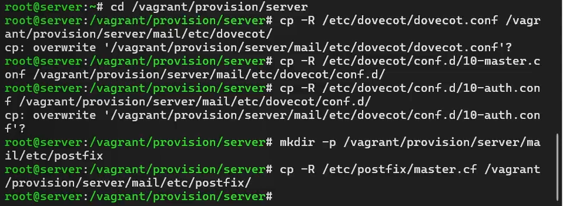
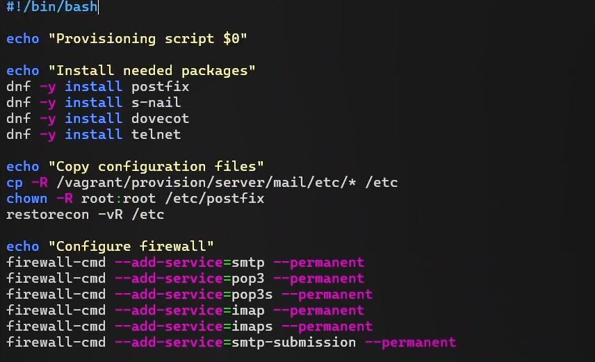
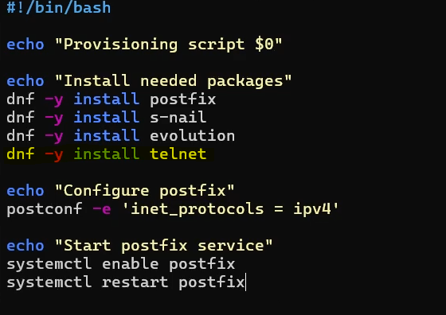
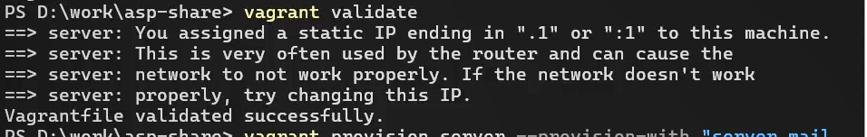
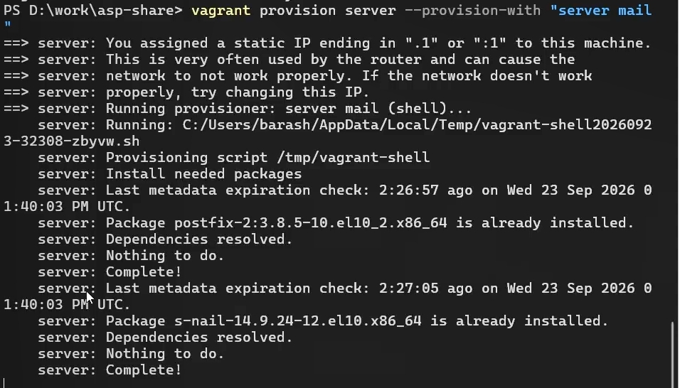
Затем применяем изменения, касающиеся client mail.
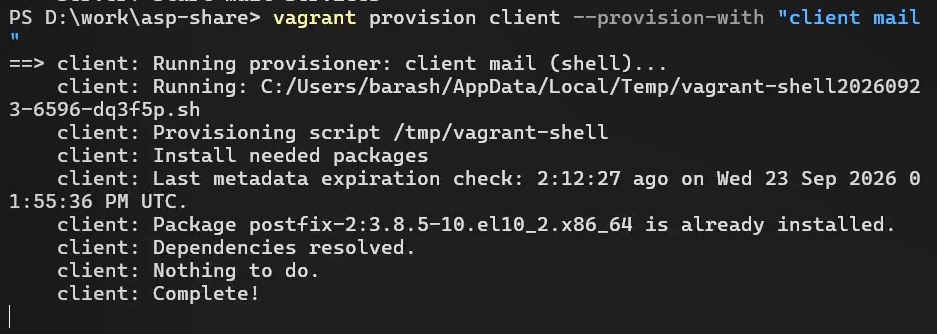
В ходе выполнения лабораторной работы № 10 мне удалось приобрести практические навыки по конфигурированию SMTP-сервера в части настройки аутентификации.